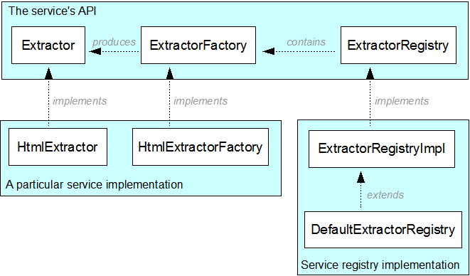

Aperture consists of a number of APIs that each fulfill a type of service, e.g. text and metadata extraction, crawling of an information source or identifying a file's MIME type. The code involved in implementing and managing such a service is typically organized in a particular way. Once you know this structure, you will be better able to quickly find your way around in the Aperture code base.
We will use the Extractor framework, used for full-text and metadata extraction, as a running example.
The heart of each service is an API, usually a Java interface, whose methods perform the embodied service. For example, the Extractor interface defines an extract method that performs full-text and metadata extraction on an InputStream accessing a document of a specific MIME type. A specific implementation such as HtmlExtractor implements this service for HTML documents.
Each service API is generally accompanied by a factory API, such as ExtractorFactory. Each API implementation should come with a factory implementation. The purpose of this factory is twofold:
For example, ExtractorFactory defines a getSupportedMimeTypes method that returns the set of MIME types supported by a particular Extractor implementation. Also, it defines a get method that returns an Extractor instance ready for use. ExtractorFactory does not specify whether a new or shared instance is returned, that is up to the implementor to decide. HtmlExtractorFactory's getSupportedMimeTypes method returns a set containing "text/html" and other known HTML(-like) MIME types and returns a new HtmlExtractor on each get() invocation.
When implementing, you should take care that implementations of the factory are as light-weight as possible. Any expensive initialization operations needed for a service implementation should happen during the get operation or in some other kind of lazy way.
In order to keep track of all available implementations of a service, a registry is used. For example, ExtractorRegistry serves as a container for all known ExtractorFactories. When asked for all factories supporting a specific MIME type, you will get a set of all ExtractorFactories whose supported MIME type contain the specified MIME type. You can then use additional measures to select the best one or simply take the first one available.
This service-factory-registry approach has been inspired by OSGi, a platform for using service-oriented architectures inside a Java application. In an OSGi application using Aperture, the HtmlExtractor and its factory would be bundled as a jar file together with a class implementing OSGi's BundleActivator interface. The latter class contains a method that is executed as soon as this bundle is presented to the system. This BundleActivator would then lookup the ExtractorRegistry instance of the system and register its factory at that registry. That's the reason why factory instantiation should be as cheap as possible, as they may all be instantiated during startup.
For those applications not based on OSGi, a default implementation of a registry is also available. For example, DefaultExtractorRegistry contains by default an instance of every ExtractorFactory available in Aperture. When you want to differentiate from this set, e.g. because you have your own set implementations, you can:
The image below shows an overview of the APIs and their dependencies of the Extractor example:
